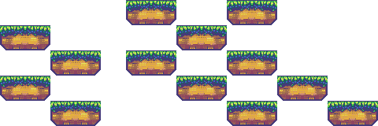
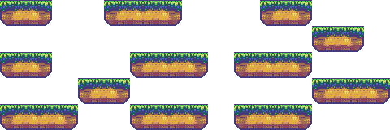

Constraints
Constraints are a way to make additional hard requirements about the generated output. Unlike models, constraints can be non-local, meaning they force some property of the entire output, not just within a small rectangles.
You can have as many constraints as you like during generation, however with multiple constraints it can be hard for the WFC to find a valid solution. Turning on backtracking can aleviate this.
Each constraint is for enforcing a different effect. The available constraints are discussed below.
Border
BorderConstraint class restricts what tiles can be selected in various regions of the output. It's pretty common that you want to specify the borders as being ground, or empty, or whatever, as otherwise if DeBroglie will often generate structures that lead off the edge and are clipped.
Note
BorderConstraint only affects the initial set of tiles that can be legally placed. That means it is not doing anything except calling Ban and Select on startup, which you can also do manually. BorderConstraint is just a convenience.
BorderConstraing specifies a set of cells using a simple logic. First, an inclusion set of cells is defined by the Sides field. This field is a bit field of flags, where there is one flag for each of the boundary sides of the output area (4 in 2d, 6 in 3d). An exclusion set is defined similarly from the ExcludeSides field. To get the set of locations affected, subtract the exclusion set from the inclusion set, then optionally invert if InvertArea is set.
For each affected location, BorderConstratin calls Select with the Tile specified. If the Ban field is set, then it calls Ban instead of Select.
Example


Path
The PathConstraint checks that it is possible to connect several locations together via a continuous path of adjacent tiles. It does this by banning any tile placement that would make such a path impossible.
Set Tiles to the set of tiles that are considered on the path. Any two adjacent locations with tiles in this set are connected, and if x is connected to y and y is connected to z, then x and z are also connected.
By default, PathConstraint forces all path tiles to be connect to each others. However, if you set EndPoints then instead it forces that those specific points connect to each other, but doesn't stop extra path tiles being placed.
Warning
PathConstraint does not have a great deal of lookahead, so adding it will significantly increase the amount of retries needed to get a successful generation. You may need to enable backtracking to get a successful result.
Example

Edged Path
The EdgedPathConstraint is a more advanced variant of the PathConstraint. The normal path constraint records which tiles can part of the path, and finds a path consisting of adjacent tiles. The edged path constraint is more restrictive. Not only do the tiles have to be placed adjacent, but their edges must match. This is configured by setting a set of "exits" for each tile. Other than this restriction, the constraint works identically.
For example consider placing the tiles  and
and  together. Both tiles have a picture of a path on them, but the path exits the tiles only on certain edges. means they are connected, but is not. We can use Edged Path Constraint to specify this, the normal path constraint isn't specific enough.
together. Both tiles have a picture of a path on them, but the path exits the tiles only on certain edges. means they are connected, but is not. We can use Edged Path Constraint to specify this, the normal path constraint isn't specific enough.
Example


The normal PathConstraint cannot cope with path tiles so close together.
Fixed Tile
The FixedTileConstraint class forces a given location to be the specified Tile at initialization. If you don't specify a location, a random legal location is chosen.
You can use FixedTileConstraint to force certain features to always be generated.
Example
Max Consecutive
The MaxConsecutiveConstraint class prevents more than a certain number of tiles appearing consecutively along the x, y or z axis.
| MaxCount | |
| 2 |  |
| 3 |  |
| 10 |

|
Mirror
The MirrorXConstraint and MirrorYConstraint class forces the generated output to be symetric about the x-axis / y-axis.
Example

Symmetry
The SymmetryConstraint constraint is a abstract generalized version of the mirror constraint. It can be used for more complicated symmetries of the generated output.
Count
The CountConstraint class forces the number of a given tile or set of tiles to be at most or at least a given number.
Separation
The SeparationConstraint class forces particular tiles to not be placed near each other.
It's useful for giving a more even distribution of tiles, similar to a Poisson disk sampling.
Custom Constraints
You can define your own constraints by extending ITileConstraint. The Init method is called once per propagator run, and the Check method is called after each step, each time tiles are selected.
Inside these methods, you can call Select and Ban to control what tiles can be legally placed. You can also call SetContradiction() to indicate that something is wrong and generation cannot continue. This will cause the propagator to give up, or backtrack, according to settings.